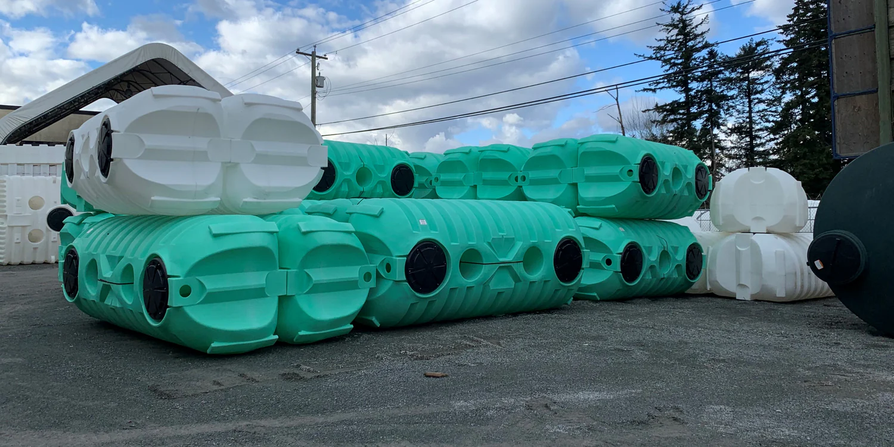
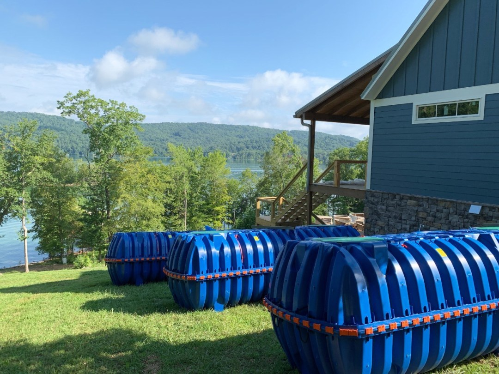

BARR PLASTIC

Barr Plastics is a company that offers a wide range of products for water management,
including those specifically designed for rainwater harvesting. Their products are crucial for making rainwater collection, storage, and usage safe and efficient. Below are more details on what they offer:
Key Products by Barr Plastics:
Barr Plastics manufactures various products made from durable plastic materials, often for rainwater harvesting systems, water filtration, irrigation, and drainage solutions. These products can include:
- Rainwater Harvesting Tanks
Barr Plastics provides rainwater storage tanks that come in various sizes and materials. These tanks are designed to hold collected rainwater for later use, such as for irrigation, flushing toilets, or even potable water (if properly filtered). The tanks are made from durable plastics such as polyethylene, which is resistant to UV degradation and can withstand harsh weather conditions. They offer both above-ground and underground tanks, allowing for flexibility in installation.
- Pre-filtration Systems
Barr Plastics offers pre-filtration systems to remove debris (like leaves, dirt, and organic matter) before the rainwater enters the storage tank. These systems often include first flush diverters, which direct the initial dirty runoff away from the storage system, ensuring cleaner water for storage. The filters help maintain water quality and prevent clogging in storage tanks.
- Benefits of Using Barr Plastics Products in Rainwater Harvesting:
- Durability: The plastics used are designed to last for many years, resistant to cracking, UV damage, and corrosion.
- Sustainability: Using rainwater harvesting products from Barr Plastics allows homeowners or businesses to reduce their dependency on municipal water systems, contributing to sustainability and water conservation efforts.
- Cost-Effective: By harvesting rainwater, you can lower water bills, especially in areas where water costs are high or during drought conditions.
- Environmental Impact: Rainwater harvesting reduces the strain on local water supplies and helps mitigate the risk of flooding by reducing runoff.

- Popular Products:
- Barr Plastics Rainwater Collection System A complete system that includes everything needed to set up a rainwater harvesting setup: tanks, first flush diverters, filtration units, and distribution pumps.
- Above-ground Rainwater Storage Tanks Often come in multiple sizes and colors to suit different needs and aesthetic preferences.
- Aquabarrel™ A product line designed for smaller residential uses, such as for gardening or irrigation.